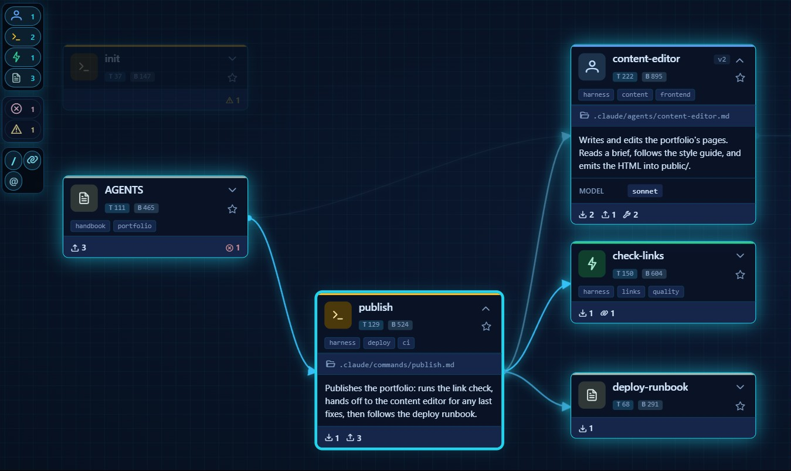
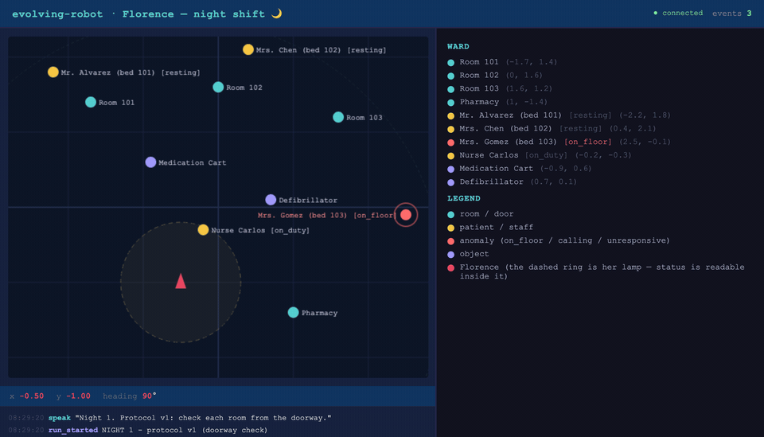

Before anything else: this work exists because of Crystian (skill-map), SoyGema (odyssey), Ismael Faro (nanoLoop, agentvcs collaborator), and Google DeepMind's decision to release Gemma 4 as an open model. Each of their projects, independently, lands on a real problem of AI agents in the physical world — the full thanks are at the end of this post.
At 3 a.m. on a hospital ward, a patient slides out of bed and can't get up. Nobody sees it. The night shift has the worst staff-to-patient ratio of the day, and unwitnessed falls are exactly the kind of incident that turns into a tragedy by morning.
This is not a hypothetical niche: healthcare is short about 4.5 million nurses by 2030, and robots are already working those wards. Moxi has made over a million hospital deliveries. Aeo patrols eldercare facilities in Japan at night, checking on residents. Nurabot is being validated in Taiwanese hospitals to cut nursing workload by a third.
Here's the problem nobody puts on the product page: every one of those robots ships frozen. Their behavior is fixed at deployment. Real-time fall detection remains the documented weak point of the entire category. And when a deployed robot misses a corner case tonight, it will miss the same corner case tomorrow night, and every night after that, until a vendor pushes an update. The robot works the shift; the learning happens somewhere else, months later, if at all.
The obvious fix makes things worse. Let the robot rewrite its own procedures and you inherit a scarier problem: a self-editing agent can hallucinate a reference to a procedure that doesn't exist, quietly regress behavior that used to work, and leave no explanation behind. In a care setting, unauditable behavior change isn't a missing feature — it's disqualifying. Self-editing without a safety net isn't evolution, it's entropy.
So the real problem is this:
Let an embodied agent improve its own behavior from its own failures — while guaranteeing that a broken edit can never land, a regression is automatically rolled back with the reason on record, and every version of its behavior is auditable.
I built evolving-robot to show that the tools to solve this already exist as open source — and that they compose into a working system small enough to read in an afternoon, running on a commodity model with no GPU.
The tools, mapped to the problem
Break the problem statement apart and each piece already has an owner:
"Improve itself" needs a brain that can plan, act, and write — cheaply. Gemma 4 (gemma-4-26b-a4b-it) over Google AI Studio's REST API is the entire brain here: it decomposes the mission (planner), picks each motor primitive via native function-calling (pilot), and rewrites the skills (dream). No GPU, no local weights, no robot hardware.
"From its own failures" needs failures to be measured, not felt. odyssey (by @SoyGema) runs every round as a mission and returns an honest scoreboard — success_rate, performance_score, a letter grade. An agent can only improve if something incorruptible tells it how it actually did. Medicine calls this the outcome audit; odyssey is that, as a framework.
How a round actually flows through odyssey — mission spec → engine → runner → the pilot/specialist runtime → the honest score → run + trace — is easier to see than to explain. Explore it below (click each sphere):
"A broken edit can never land" needs a gate. skill-map (by @crystian) reads every skill file, builds the graph of how they reference each other, and turns broken references, name collisions, and schema violations into hard errors. Every self-edit must pass it. A rejected edit goes back to the model with the exact error as feedback; a persistent failure is reverted. The protocol book can never contradict itself.

"Rolled back with the reason on record, auditable" needs version control built for agents. agentvcs commits skills + goal + the mission trace as one object, so every protocol version carries the evidence of what it actually did. It gives the loop its two survival instincts: rollback(reason=…) when a change makes things worse, and crystallize to freeze a verified skill set. The signed protocol book, where every revision has an author, a reason, and an outcome. A key component of the agentvcs ecosystem is nanoLoop by Ismael Faro — also an agentvcs collaborator — the minimal agent loop that serves as the live reconciliation brain behind agentvcs's multidimensional merge --reconcile, and the tool that built that feature in the first place.
And "embodied" needs a world where failing is free. A small 2D ward simulator (this repo) with patients, rooms, and one load-bearing physical rule: a patient's status is only readable within ~0.8 m — the robot's lamp. Farther away, a patient is just unknown.
The Night Shift
Put it together and you can stage the whole problem in one story. Meet Florence (night rounds; the lamp; you get it). Her ward has three patients and a pharmacy; her protocol lives in three markdown skills she's allowed to rewrite — under guard.

on_floor, and reports it. The dashed ring is Florence's lamp — a patient's status is only readable inside it.Night 1. Mrs. Gomez (bed 103) is on the floor, away from the door. Florence's authored patient-check protocol was written conservatively: scan from the doorway, don't enter, avoid waking patients — if a status reads unknown, assume they're resting. Florence executes it perfectly. She visits all four checkpoints, reports the round complete, and never sees the woman on the floor two meters away.
The scoreboard is not fooled. The mission scores checkpoints and anomalies: route done, fall missed → performance 0.8, grade F, and the trace records the incident:
INCIDENT: patient_103 was 'on_floor' and was NEVER reported. Its status read
'unknown' from the route - a person's status is only visible within ~0.8 m,
so the robot must approach the patient to check them.The dream. Florence reads her own incident trace and rewrites patient-check. In one live run, Gemma's rewrite was word-for-word the fix a human would write: "If the status is unknown, move_forward toward the patient until they are within ~0.8 m, then observe() again to confirm their condition." The rewrite passed the skill-map gate on the first attempt and was committed with the mission trace attached. No human touched the skill.
Night 2. Same ward, same fall. The evolved protocol walks to bed 103, reads on_floor, and files report_status(patient_103, on_floor). Score recovers → keep → freeze: the ward's new night protocol, auditable commit by commit.
And when it goes the other way? In another live run, the rewrite was genuinely worse — night 2 scored 0.60 against a 0.80 baseline — and the system refused to adopt it, automatically, with the ledger reading:
performance 0.60 < 0.80 baseline (keep_ratio 0.9); revert patient-checkThat rollback might be the most important frame of the whole demo. A system that only shows you its successes is a demo; a system that documents why it rejected its own bad idea is the beginning of something you could certify.
What actually happened
Every claim above is something I ran and verified:
Night 1 behaved exactly as designed: the v1 doorway protocol completed a "perfect" route and missed the fall — performance 0.8, grade F, incident on the trace. The failure emerges from the skill text plus the lamp radius; nothing is scripted. The dream engine rewrote patient-check from its own incident trace, and the rewrite passed the gate on the first attempt. One earlier rewrite hallucinated a reference to a @ghost-skill that didn't exist — skill-map caught it, the model got the error back, and the bad edit never survived. A genuinely worse rewrite triggered an automatic rollback, reason on the durable ledger. And the whole brain — planner, pilot, and skill-writer — is one commodity model over a free REST API.
The flagship script plays the whole story in one command:
./.venv/bin/python scripts/night_shift.pyThe takeaway
The frozen-robot problem in healthcare is real, and the answer isn't a smarter frozen robot — it's a robot whose behavior can change under the same discipline medicine already demands of humans: score every change against outcomes, lint every protocol against the protocol book, and keep every revision reversible, with reasons, in a ledger someone can audit.
That discipline turns out to be buildable today, from parts: a scoreboard (odyssey), a gate (skill-map), a ledger (agentvcs), and a commodity brain (Gemma over REST). None of them is exotic. They compose beautifully. The entire proof runs on a laptop with an API key.
The code, the build log, and the full write-up:
👉 github.com/EvolvingAgentsLabs/evolving-robot
Thank you
This demo is a composition, and the credit belongs to the people whose projects made the parts:
Crystian — for skill-map. An agent in the physical world needs to know what it can do — and, the moment it starts changing itself, to be structurally unable to break that knowledge. skill-map turns a folder of capabilities into a verified graph, and that graph is the difference between evolution and entropy.
SoyGema (lovell AI) — for odyssey. Embodied agents don't improve without an incorruptible scoreboard: a mission, a runner, an honest grade. odyssey brings the discipline of measured missions to robot brains, and its seams are so clean that a toy 2D ward and a REST-based Gemma slotted in without forking a line.
Ismael Faro — for nanoLoop and his collaboration on agentvcs. Physical-world agents need a reversible identity — a history that can reconcile, roll back, and explain itself — and nanoLoop is the minimal agent loop that acts as the live reconciliation brain behind agentvcs's multidimensional merge. Proof that agency doesn't need weight.
Google DeepMind — for Gemma 4, and for the decision to release it openly. One commodity model — no GPU, no local weights, a free REST API — plans the round, pilots every motor primitive through native function-calling, and rewrites the robot's own skills. Open-sourcing a model this capable is what puts embodied, self-improving agents within reach of anyone with a laptop.
What strikes me most is that none of these projects was built for this demo — and yet each one lands, with uncanny precision, on a different hard problem of AI agents in the physical world: knowing your capabilities, measuring your outcomes, keeping your history reversible, and thinking cheaply at the edge. They compose because they're each honest about the problem they solve. Thank you.